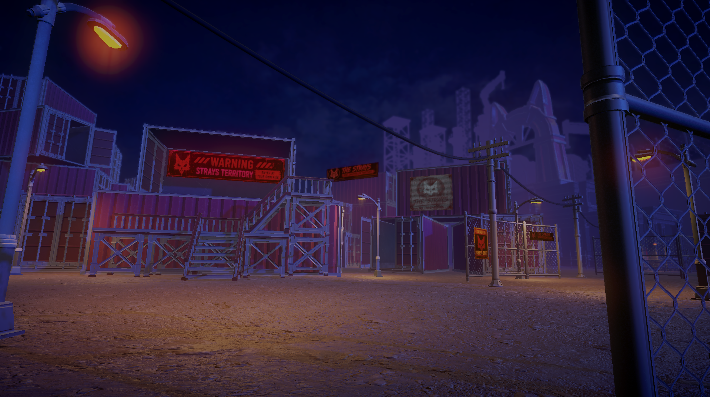
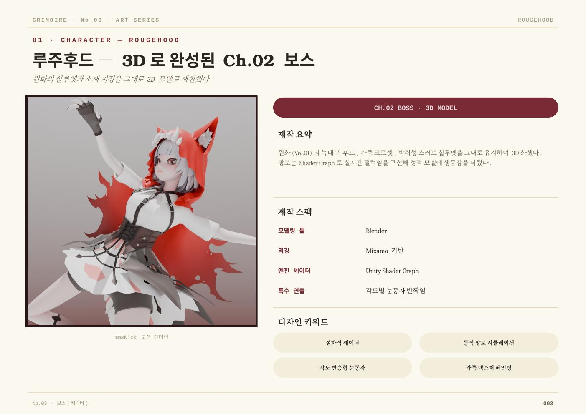

UnTruth
누구나 알고 있다고 믿는 동화와 정의, 기억을 뒤집는 이야기.
CHAPTER I / UNTRUTH
CHAPTER I · PLAYABLE ARCHIVE
현재 완성된 챕터 1의 실제 플레이 기록입니다. 타이틀부터 거리 탐험, 전투, 캐릭터 연출까지 하나의 플레이 흐름으로 확인할 수 있습니다.
GRIMOIRE의 타이틀과 챕터 1의 시작.
THE WORLD OF GRIMOIRE
그림 시티. 연방 수사국의 그림자 아래, 9개의 동화가 9개의 범죄구역이 된 도시. 챕터 1은 그 도시의 가장 낮은 골목, 루주 디스트릭트에서 시작됩니다.
누구나 알고 있다고 믿는 동화와 정의, 기억을 뒤집는 이야기.
늘 비가 내리는, 국가가 관리하고 묵인하는 범죄도시.
빨간 망토가 남긴 흔적에서 시작되는 첫 번째 사건.

THE PLAYABLE CITY
컨셉을 한 장의 이미지에 멈추지 않고, 플레이어가 직접 이동하고 전투하며 탐색하는 거리로 구현했습니다. 건물·간판·벽면·펜스는 하나의 구역 안에서 리듬을 만들도록 배치했습니다.
CHARACTER ARCHIVE
챕터 1을 여는 도로시와 루주후드. 완성 일러스트와 디자인 시트를 함께 전시합니다.
THE INVESTIGATOR
도로시
진실을 보려는 자. 그녀가 믿어온 정의는 정말 정의였을까. 보라색은 도로시가 끝내 마주해야 할 답을 암시합니다.


THE RED HOOD
루주후드
상실을 부정하고 계승한 자. 붉은 망토는 유품이며, 그 선명한 색은 그녀가 버리지 못한 현실을 드러냅니다.
CHARACTER MODELING · IN GAME
컨셉을 3D 캐릭터로 해석하고, 모델링·텍스처·리깅·Unity 적용을 거쳐 실제 플레이 씬에 연결했습니다. 아래 이미지는 제작 과정과 완성 렌더를 정리한 캐릭터 아카이브입니다.

PLAYER CHARACTER
보라색 실루엣, 의상 레이어, 표정과 머리카락의 리듬까지. 2D 원화의 인상을 플레이어 캐릭터로 옮겼습니다.

CHAPTER I BOSS
붉은 망토의 대비와 공격적인 실루엣을 중심으로 설계한 챕터 1 보스 캐릭터입니다.
MAKING CHAPTER I
보여주기 위한 정적 이미지가 아니라, 실제 플레이 씬을 만들기 위해 준비한 3D 에셋·환경 구성·프로그램 작업입니다.

반복 가능한 건물 모듈을 기반으로 거리의 높이와 상점 구성을 확장했습니다.

상점 간판, 그래피티, 표지판으로 루주 디스트릭트의 구역성을 만들었습니다.

플레이 동선 안에서 전투·탐험·연출이 이어지도록 환경을 구성했습니다.
PROGRAMMING
챕터 1의 실제 플레이를 위해 환경 배치와 재질, 상호작용 장면을 연결했습니다.
건물 모듈과 스타일 값을 조합해 거리의 반복을 줄이고 구역별 변화를 만듭니다.
창문 발광, 간판 조명, 오염도와 색감으로 비 내리는 야간 분위기를 조절합니다.
펜스·케이블·간판·데칼을 레벨 안에 배치해 플레이 가능한 거리의 밀도를 완성합니다.

PROJECT ART BOOK
GRIMOIRE · CHAPTER I · DEVELOPMENT ARCHIVE